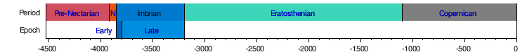
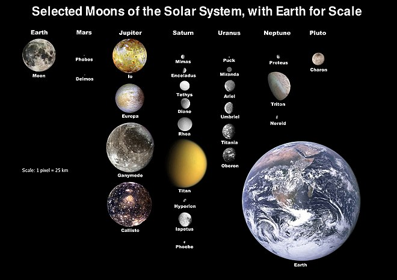

The Moon is Earth's only natural satellite. Its diameter is about one-quarter of Earth's (comparable to the width of Australia),[17] making it the fifth largest satellite in the Solar System and the largest and most massive relative to its parent planet.[f] It is larger than all known dwarf planets in the Solar System.[18] The Moon is a planetary-mass object with a differentiated rocky body, making it a satellite planet under the geophysical definitions of the term. It lacks any significant atmosphere, hydrosphere, or magnetic field. Its surface gravity is about one-sixth of Earth's at 0.1654 g—Jupiter's moon Io is the only satellite in the Solar System known to have a higher surface gravity and density.
The Moon orbits Earth at an average distance of 384,400 km (238,900 mi), or about 30 times Earth's diameter. Its gravitational influence is the main driver of Earth's tides and very slowly lengthens Earth's day. The Moon's orbit around Earth has a sidereal period of 27.3 days. During each synodic period of 29.5 days, the amount of visible surface illuminated by the Sun varies from none up to 100%, resulting in lunar phases that form the basis for the months of a lunar calendar. The Moon is tidally locked to Earth, which means that the length of a full rotation of the Moon on its own axis causes its same side (the near side) to always face Earth, and the somewhat longer lunar day is the same as the synodic period. Due to cyclical shifts in perspective (libration), 59% of the lunar surface is visible from Earth.
The most widely accepted origin explanation posits that the Moon formed 4.51 billion years ago, not long after Earth's formation, out of the debris from a giant impact between Earth and a hypothesized Mars-sized body called Theia. It receded to a wider orbit because of tidal interaction with the Earth. The near side of the Moon is marked by dark volcanic maria ("seas"), which fill the spaces between bright ancient crustal highlands and prominent impact craters. Most of the large impact basins and mare surfaces were in place by the end of the Imbrian period, some three billion years ago. Although the reflectance of the lunar surface is low (comparable to that of asphalt), its large angular diameter makes the full moon the brightest celestial object in the night sky. The Moon's apparent size is nearly the same as that of the Sun, allowing it to cover the Sun almost completely during a total solar eclipse.
Both the Moon's prominence in Earth's sky and its regular cycle of phases have provided cultural references and influences for human societies throughout history. Such influences can be found in language, calendar systems, art, and mythology. The first artificial object to reach the Moon was the Soviet Union's uncrewed Luna 2 spacecraft in 1959; this was followed by the first successful soft landing by Luna 9 in 1966. The only human lunar missions to date have been those of the United States' Apollo program, which landed twelve men on the surface between 1969 and 1972. These and later uncrewed missions returned lunar rocks that have been used to develop a detailed geological understanding of the Moon's origins, internal structure, and subsequent history. The Moon is the only celestial body visited by humans.
Names and etymology
The usual English proper name for Earth's natural satellite is simply Moon, with a capital M.[19][20] The noun moon is derived from Old English mōna, which (like all its Germanic cognates) stems from Proto-Germanic *mēnōn,[21] which in turn comes from Proto-Indo-European *mēnsis "month"[22] (from earlier *mēnōt, genitive *mēneses) which may be related to the verb "measure" (of time).[23]
Occasionally, the name Luna /ˈluːnə/ is used in scientific writing[24] and especially in science fiction to distinguish the Earth's moon from others, while in poetry "Luna" has been used to denote personification of the Moon.[25] Cynthia /ˈsɪnθiə/ is another poetic name, though rare, for the Moon personified as a goddess,[26] while Selene /səˈliːniː/ (literally "Moon") is the Greek goddess of the Moon.
The usual English adjective pertaining to the Moon is "lunar", derived from the Latin word for the Moon, lūna. The adjective selenian /səliːniən/,[27] derived from the Greek word for the Moon, σελήνη selēnē, and used to describe the Moon as a world rather than as an object in the sky, is rare,[28] while its cognate selenic was originally a rare synonym[29] but now nearly always refers to the chemical element selenium.[30] The Greek word for the Moon does however provide us with the prefix seleno-, as in selenography, the study of the physical features of the Moon, as well as the element name selenium.[31][32]
The Greek goddess of the wilderness and the hunt, Artemis, equated with the Roman Diana, one of whose symbols was the Moon and who was often regarded as the goddess of the Moon, was also called Cynthia, from her legendary birthplace on Mount Cynthus.[33] These names – Luna, Cynthia and Selene – are reflected in technical terms for lunar orbits such as apolune, pericynthion and selenocentric.
Natural history
Lunar geologic timescale
The lunar geological periods are named after their characteristic features, from most impact craters outside the dark mare, to the mare and later craters, and finally the young still bright and therefore readily visible craters with ray systems like Copernicus or Tycho.
Formation
Isotope dating of lunar samples suggests the Moon formed around 50 million years after the origin of the Solar System.[36][37] Historically, several formation mechanisms have been proposed,[38] but none satisfactorily explains the features of the Earth–Moon system. A fission of the Moon from Earth's crust through centrifugal force[39] would require too great an initial rotation rate of Earth.[40] Gravitational capture of a pre-formed Moon[41] depends on an unfeasibly extended atmosphere of Earth to dissipate the energy of the passing Moon.[40] A co-formation of Earth and the Moon together in the primordial accretion disk does not explain the depletion of metals in the Moon.[40] None of these hypotheses can account for the high angular momentum of the Earth–Moon system.[42]
Giant impacts are thought to have been common in the early Solar System. Computer simulations of giant impacts have produced results that are consistent with the mass of the lunar core and the angular momentum of the Earth–Moon system. These simulations show that most of the Moon derived from the impactor, rather than the proto-Earth.[46] However, more recent simulations suggest a larger fraction of the Moon derived from the proto-Earth.[47][48][49][50] Other bodies of the inner Solar System such as Mars and Vesta have, according to meteorites from them, very different oxygen and tungsten isotopic compositions compared to Earth. However, Earth and the Moon have nearly identical isotopic compositions. The isotopic equalization of the Earth-Moon system might be explained by the post-impact mixing of the vaporized material that formed the two,[51] although this is debated.[52]
While the giant-impact theory explains many lines of evidence, some questions are still unresolved, most of which involve the Moon's composition.[55][example needed]Above a high resolution threshold for simulations, a study published in 2022 finds that giant impacts can immediately place a satellite with similar mass and iron content to the Moon into orbit far outside Earth's Roche limit. Even satellites that initially pass within the Roche limit can reliably and predictably survive, by being partially stripped and then torqued onto wider, stable orbits.[56]
Natural Development
After the Moon's formation it settled into a much closer Earth orbit than it has today. Each body therefore appeared much larger in the sky of the other, eclipses were more frequent, and tidal effects were stronger.[57] Due to tidal acceleration, the Moon's orbit around Earth has become significantly larger, with a longer period.
Since cooling and stripped of most of its atmosphere,[58] both originating from its initial formation, the lunar surface has been shaped by large impact events and many small ones, forming a landscape featuring craters of all ages. The prominent lunar maria were produced by volcanic activity. Volcanically active until 1.2 billion years ago, most of the Moon's mare basalts erupted during the Imbrian period, 3.3–3.7 billion years ago, though some are as young as 1.2 billion years[59] and some as old as 4.2 billion years.[60] There are differing explanations for the causes behind the eruption of mare basalts, particularly their uneven occurrence, mainly on the near-side. Causes of the distribution of the lunar highlands on the far side are also not well understood. One explanation suggests that large meteorites were hitting the Moon in its early history, leaving large craters which then were filled with lava. Other explanations suggest processes of lunar volcanism.[61]
Physical characteristics
Size and mass
The lunar geological periods are named after their characteristic features, from most impact craters outside the dark mare, to the mare and later craters, and finally the young still bright and therefore readily visible craters with ray systems like Copernicus or Tycho.
Structure